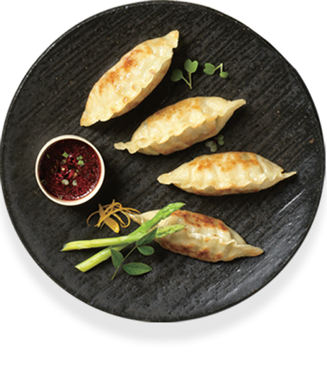

BRAND SYMBOL
비빔철학을 계승합니다.
비비고는 한식 전통의 비빔밥과 수저, 돌솥을 재해석한 브랜드 심벌을 통해 비빔밥에 담긴 '비빔' 철학을 계승합니다.
비빔 철학은 서로 소통하여 좋은 것은 나누고 부족한 것은 채워 하나로 어우러지는 것을 말합니다.
PRODUCT
비비고의 제품을 소개합니다.



만두
얇고 쫄깃한 만두피에 굵게 썰은 소로 씹는 맛이 살아있는 만두
김치
좋은 원재료와 CJ제일제당의 기술로 담가 맛있는 김치
국 / 탕 / 찌개
오랜시간 끓여낸 깊은 육수에 재료를 풍성하게 담은 국물요리
한식반찬
굵게 썰어 풍성한 식감의 한식반찬
장
오랜 시간 발효해 어느 음식에도 잘 어울리는 장
밥
비비고가 제대로 만든 한그릇 비비고 밥
김
건강하고 깨끗한 원재료로 본연의 맛과 향을 그대로 구현한 김
죽
제대로 만들어 그대로도 맛있는 비비고 죽
면
쫄깃한 면발과 풍성한 고명을 급속동결하여 그대로 끓여 즐기는 면
MEDIA CHANNEL
비비고의 최신 소식을 알려드립니다.